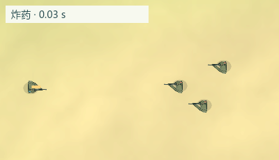
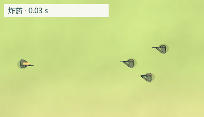
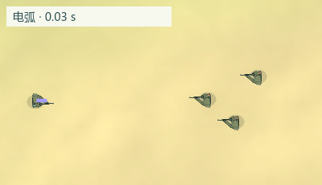
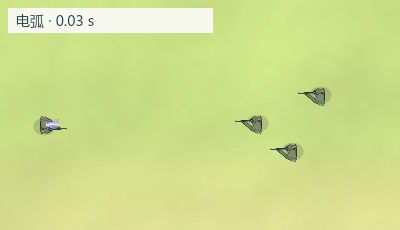
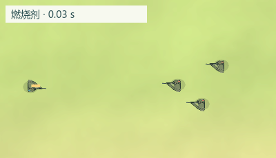
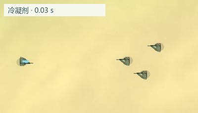
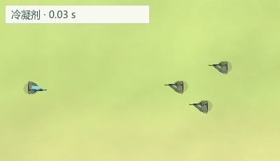

左侧为改动前，右侧为当前游戏绘制。均为 4 秒循环 GIF，复用实际战斗与绘制逻辑离线导出；不是浏览器实机录像。伤害、作用范围和持续时间没有改变。
命中闪光、膨胀火团、冲击波、飞散火星和消散烟尘。


从飞行开始即呈现抖动折线、短分叉、紫色辉光和白色电芯；抛射时沿空中弹道显示。


圆形范围内分散八簇小火苗，各自轻微跳动，并带有少量余烬。

圆形范围内飘落十二片小雪花，轻微旋转并逐渐淡入淡出。


使用项目已有 Kenney Particle Pack 的 CC0 粒子，配合程序绘制；四张 128×128 透明 PNG 合计 29564 字节。近战附魔也使用对应命中特效。穿透、追踪等其他配件的行为与绘制保持原样；与上述四种配件组合时会呈现新的伤害特效。